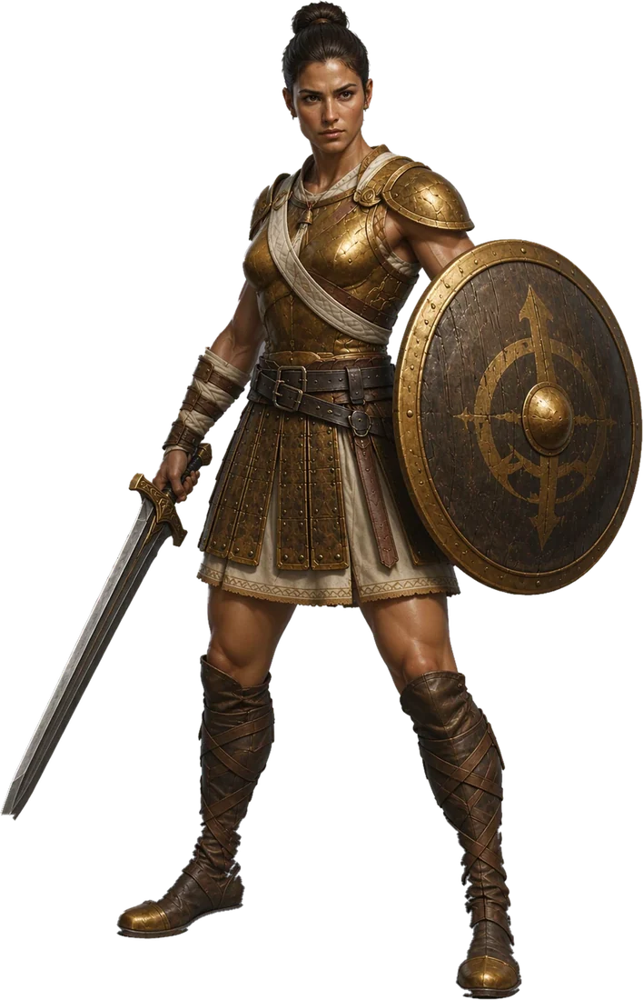

Vowborn · Pouso do Sino
Guardião
No Pouso do Sino, a primeira noite de monstros não teve exército.
Teve gente comum de pé na cerca, até o dia nascer. Dali nasceu o Voto: enquanto houver quem não luta, ninguém dorme sem guarda. O Guardião é esse voto com escudo e espada. Carrega no peito um amuleto-sino, e cada cordão amarrado nele é de alguém da Guarda que caiu. Não luta para vencer. Luta para que ninguém fique para trás. Agora os sinos-portal de Ermândia estão apagados, e ele leva o Voto para fora da vila, de sino em sino, até o norte.